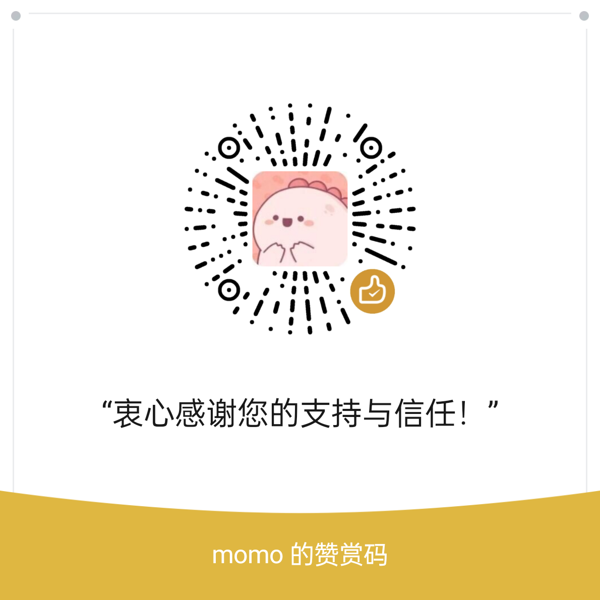

写这封信的时候，其实想了很久该怎么说。我不太想让别人知道太多关于我的事情，但又确实有些话，想说给愿意听的人。
我只是一个很普通的学生，在一所很普通的学校念书。去年刚专升本上岸，还没来得及好好喘口气，家里就出了变故。顶梁柱倒了，收入归零。虽然之前有点积蓄撑着，不至于揭不开锅，但那种"一分钱掰成两半花"的感觉，大概只有经历过的人才懂。
最现实的一次是牙疼。拖了很久实在扛不住才去医院，查出来是根尖炎症。治疗、根管、牙冠，前前后后花了将近五千块。对有些人来说可能不算什么，但那段时间我确实反复算了好几遍，心里挺不是滋味的。
平时的生活费倒也不是不够花，只是每花一笔钱，心里都会多一份掂量。偶尔也会想，如果自己宽裕一点就好了——不用大富大贵，能少为钱发愁就行。
说这些不是为了诉苦。我知道比我难的人还有很多，我只是想把真实的状态写下来。如果你愿意支持我，哪怕是一杯奶茶钱，我都会发自内心地感激。如果你暂时不方便，也没关系——你能看到这里，我已经觉得很幸运了。
生活还在继续，我会努力走下去的。
